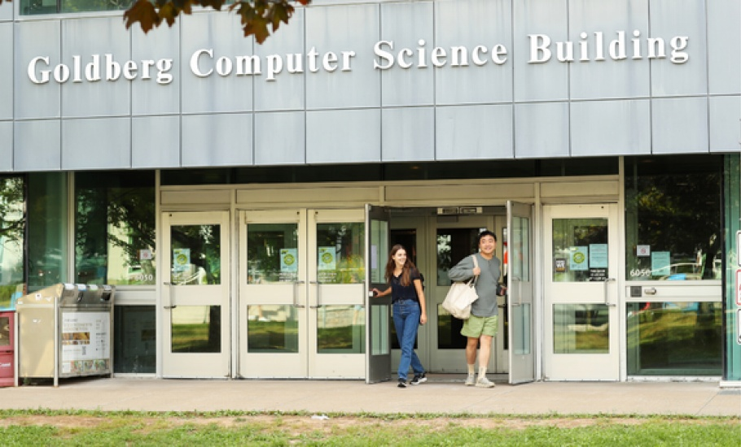

My Goals

Current Goals (2023)
- Become proficient in HTML, CSS and Javascript
- I believe that I've made good progress with this goal. Javascript is new to me, but I feel decently proficient in HTML and CSS.
- Become proficient in Java
- I have made good progress with Java over the past several months.
- Gain a higher understanding of computer systems
- I feel I have a decent grasp computer systems function.
- Achieve and maintain a GPA of 3.50
- My grades are satisfactory so far.
Future Goals (2024-)
- Gain a higher understanding of calculus in relation to computer science
- I plan on taking a calculus course over the summer break.
- Gain a higher understanding of discrete mathematics
- I plan on taking discrete mathematics in the fall of 2023.
- Gain a higher understanding of data structures and algorithms
- I'm looking forward to pursuing these topics in order to become more knowledgeable in my career.
- Become proficient in Python
- I will be researching python in during my own time over the summer break.